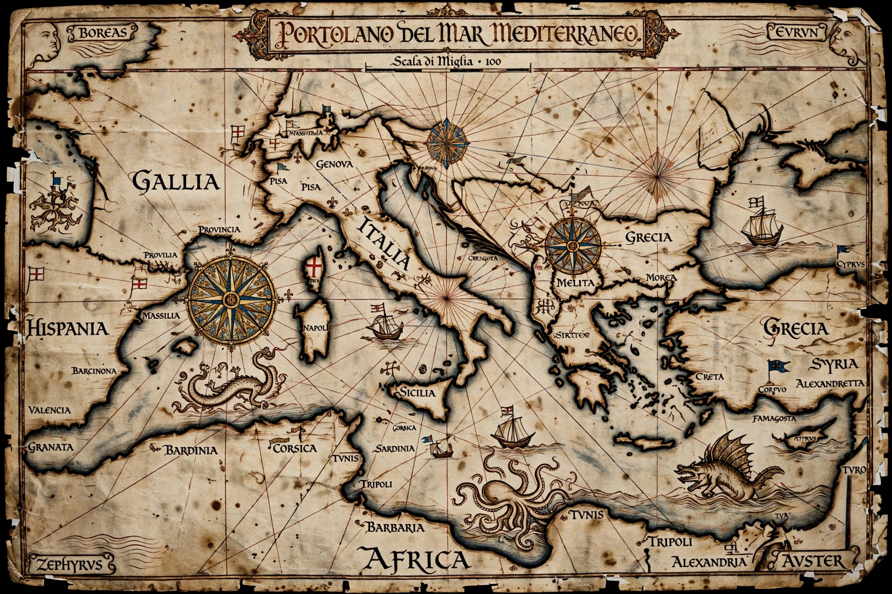

| Portolan chart | |
|---|---|
 | |
| Type | Nautical chart |
| Origin | Mediterranean, late 13th century |
| Material | Vellum |
| Features | Rhumb lines, coastal place names, compass roses |
A portolan chart (from Italian portolano, a book of sailing directions) is a type of nautical map produced in the Mediterranean world from the late 13th to the 16th century, distinguished by its network of rhumb lines radiating from compass roses across the chart, and by dense sequences of coastal place names written perpendicular to the coastline. Portolan charts are remarkably accurate for the Mediterranean and Black Sea coasts — far more accurate than other medieval world maps — because they were working tools compiled from sailors' compass bearings and estimated distances.
Portolan charts were drawn on single sheets of vellum, often retaining the shape of the animal skin, including the neck. They typically have no projection or coordinate grid in the modern sense; instead, a hidden circle was divided into 16 points from which rhumb lines for the 32 winds radiated. Place names of ports and headlands were written inland at right angles to the coast, important harbours in red ink. Islands were coloured (Rhodes red, for example), and later charts added flags of ruling powers, vignettes of cities, and elaborate decoration for presentation copies. Distances were given on a "portolan mile" scale bar.
The oldest surviving example is the Carta Pisana, dated to about 1275–1300. The Majorcan school, associated with Jewish cartographers of Palma such as Angelino Dulcert (whose signed chart of 1339 survives) and Abraham Cresques, producer of the magnificent Catalan Atlas of 1375, brought the genre to its artistic peak. The Crown of Aragon, Venice and Genoa were the main centres of production. As oceanic exploration expanded in the 15th century, portolan techniques were extended to the Atlantic coasts of Europe and Africa, and the charts influenced the first printed sea atlases, though their origin — whether a sudden invention based on magnetic-compass surveying or an inheritance from antiquity — remains debated by historians of cartography.
See also: Catalan Atlas · Crown of Aragon · Circumnavigation